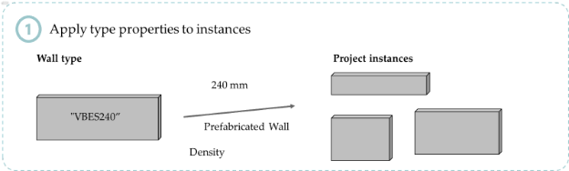
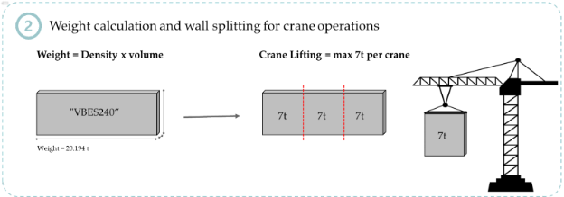
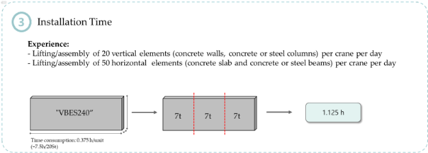
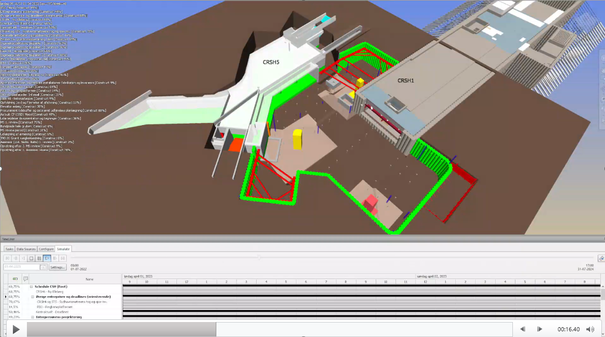
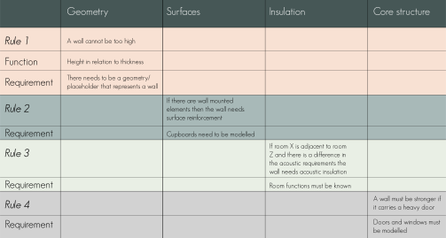
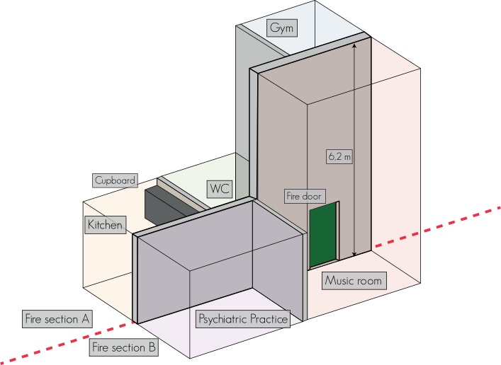

From "Notepad" Engineer to Digital Construction Engineer
Master's thesis
2019-2020
Overall flow
- Formwork is required for insitu construction
- The foreman of the concrete team estimates an amount of different forms based on his project overview
- The items are delivered on site as early as possible to ensure enough formwork is available at all time
- Detailed insights regarding when and where which amount and types of formwork is used is not available
- Items not in use are using valuable space and cost the project unnecessary money
Paper publications
- Automation in Construction
- Linked Data in Architecture and Construction (LDAC)
Linked Building Data in a nutshell
BOT: A modular and extendable building representation
BOT: The Building Topology Ontology
bot:Zone
bot:Element
bot:Interface
BART Stage 2 delivery
Incremential reasoning
BART Stage 3 delivery
The potential of incremential reasoning
- A use case for HVAC Engineering
- A use case for Construction Management
A use case for Construction Management
Rule 1
Helper Rule: "Apply type properties to instances"
All related properties of an instance can be retrieved by just querying the instance.
Rule 2
Splitting of prefabricated elements based on max. weight
In the process of installing prefabricated elements, it is crucial that the time estimation is based on the right assumptions. To make sure these assumptions are acted upon correctly, we need to feed our data with expert experience.
Rule 3
Calculating the installation time for prefabricated elements
The next step in planning the construction activities is to estimate how long it will all take and to do so we need to estimate the time consumption of each activity, based on a rule.
LBS App
Utilizing incremental reasoning for model and location-based scheduling
Implementing 4D at a construction site
Initial process setup
- All discipline models are classified with a coding system for grouping 3D objects together. E.g. A secant pile is coded with the Mark property "SP001" and the GroupIdentification property "TC-SecantPileWall-South"
- The activities in the main schedule that can be linked to 3D objects are equiped with a 4D-property that contains a list of all classification-codes that specifies the items that are constructed in the activity.
- A script takes the discipine models and the main schedule as an input, looks for common identifiers and adds schedule information to each object.
- Voilà! All discipline models are 4D-enabled!
- Importing the models into Navisworks, running the task-element wizard based on the 4D-properties and creating a 4D-video of the project is now a piece of cake!
- Whenever there is a change in the project that affects either the models or the schedule or both, the affected item is updated and then the script runs again and updates the 4D-enabled models
A perfect workflow to effectively implement 4D into the project?
Right?
But the 4D video was never actively used on site
For various reasons:
- The video was not interactive enough to be used on site - it was only a dumm mp4-file.
- Colleagues on site did not have Navisworks installed or were not familiar enough to use the 4D simulation in Navisworks
- Construction workers on site cannot use the 4D-simulation
That's why we developed an easy-to-use and accessible web-based 4D-simulation (as a weekend project)
On our project we had great success to bring valuable 4D information to each project participant in need
VDC at Ny Ellebjerg
A success story of implementing VDC
ConTech Pioneer Project 5


How can boundary conditions for walls be described in a semantic data model so:
- The architect doesn't need to create detailed drawings
- IKEA like manuals could be machine generated for the specific wall
- The architect can continiously check the design against manufacturer solutions
- The wall could potentially be custom made by the manufacturer
A set of rules were defined
A demo model was created
Rule 1
Rather simple: "What's the wall's max height?"
For the remaining rules, instead of describing properties directly on the walls, they were inherited to wall surfaces based on space demands
Rule 2
Something heavy is mounted on the wall -> it needs a reinforced surface!
Rule 3
A quiet room and a loud room are separated by this wall -> it needs acoustic insulation!
Rule 4
A heavy door is carried by the wall -> it needs structural reinforcement!
Intelligent systems can infer the implicit knowledge from the bits and pieces that we feed it
Final remark
The technology is maturing - all the bits and pieces are already there
Go and create something meaningful with it! 🚀🚀🚀
Thank you for your attention!
Questions? Thoughts? Ideas? Let's discuss them over a ☕